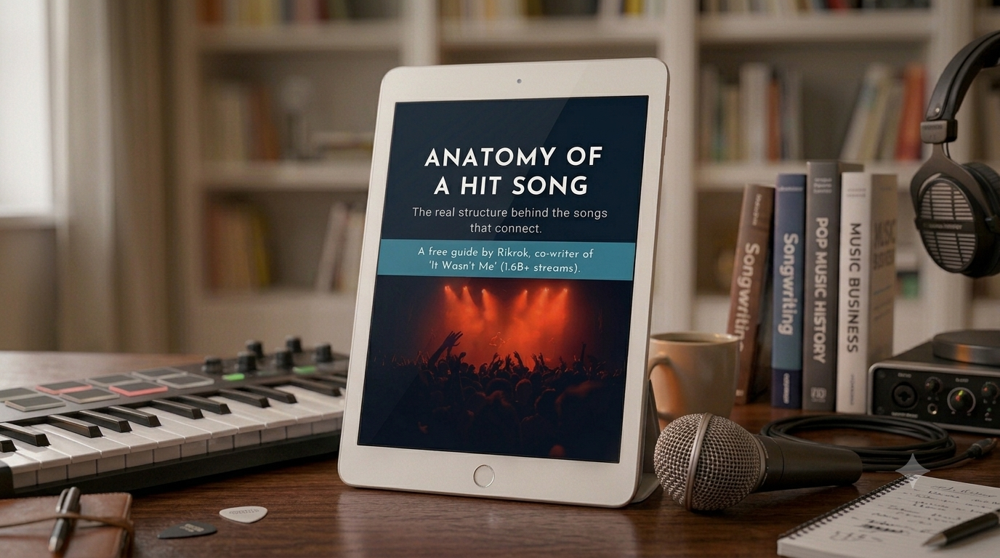
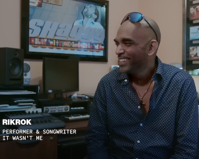

This free guide breaks down the real structure behind why a song connects, step by step, so you can build it into your own songs instead of waiting for inspiration to show up.

Send Me The Guide ↓You’ve probably written a song that actually landed. People in the room reacted. Maybe someone told you it should be on the radio. Then you sat down to write the next one and had no idea how to get there again.
Here’s the problem: you can write something great once, on a good day, when the right idea just shows up. Doing it again on purpose, whenever you need to, is the part nobody’s shown you how to do.

I’ve been on both sides of that exact wall. I co-wrote “It Wasn’t Me” with Shaggy.
It hit #1 on the Billboard Hot 100, went multi-platinum, got sampled by Liam Payne, and ended up in a Super Bowl commercial. It’s still getting played 26 years later.
Truth be told, we didn’t plan any of it. We wrote it because we thought it was funny, and we figured other people would too. That was the whole plan.
I spent years afterward trying to repeat it on purpose and couldn’t, because I’d never actually figured out why it worked in the first place.
That’s what sent me looking for the real, repeatable structure behind why a song connects.
This guide is that teardown. I pulled “It Wasn’t Me” apart piece by piece and wrote down exactly what makes each part work, so you can build the same structure into your own songs, on purpose.
You’ve probably got a song idea sitting in your head right now.
This guide shows you the shape it needs to take before you record a single note. Drop your email below and I’ll send Anatomy of a Hit Song straight to your inbox.